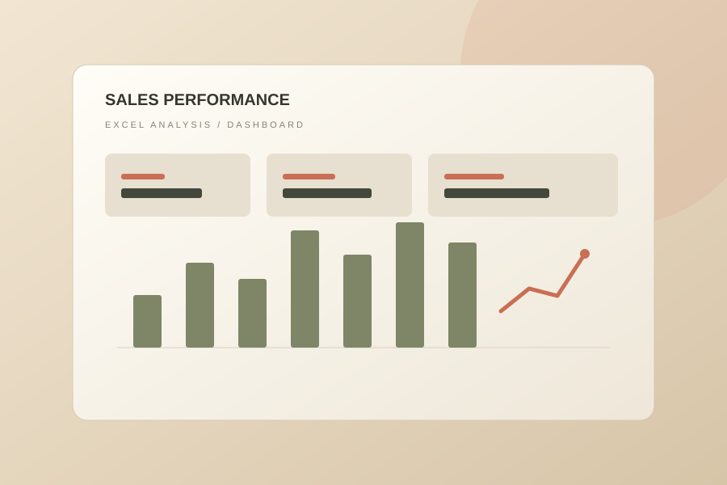
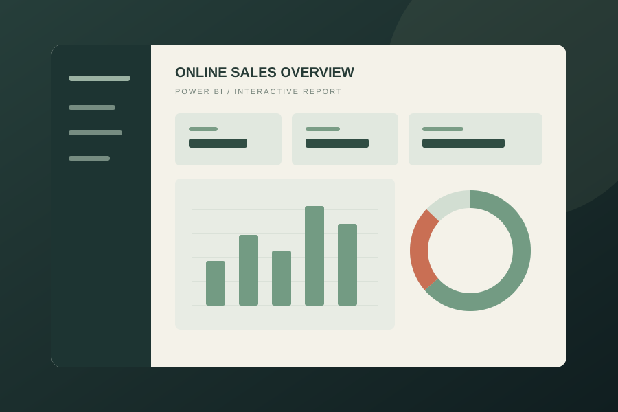
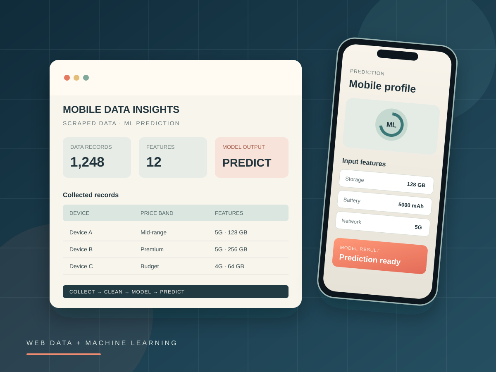
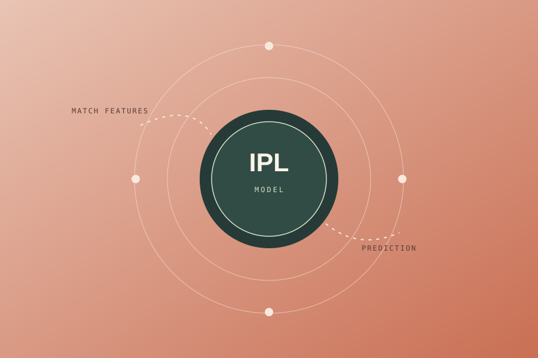
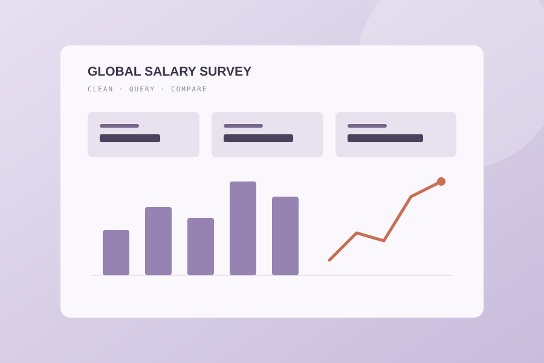
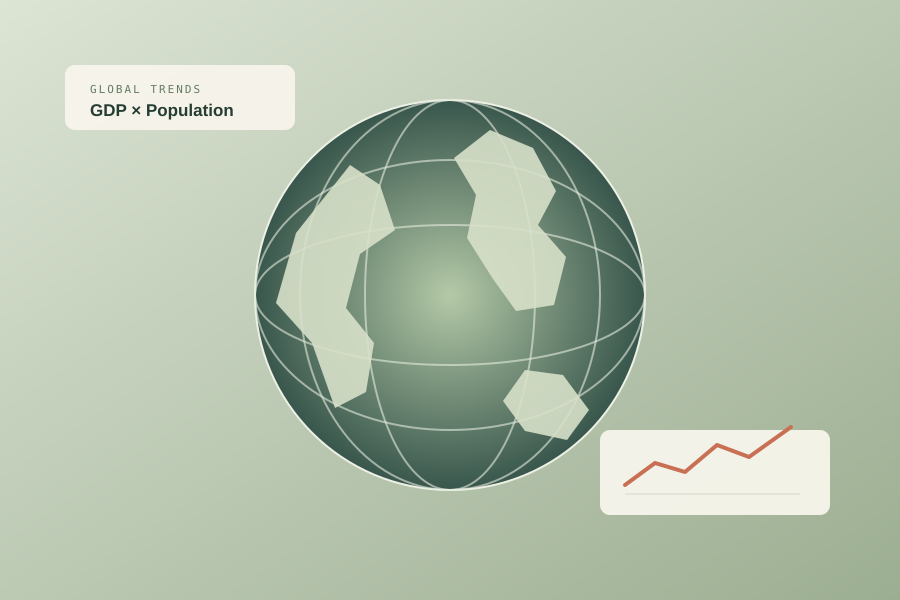
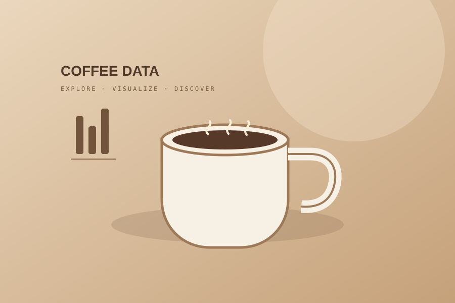

01 / EXCEL↗
Sales overview
BUSINESS ANALYTICS
Super Store Sales Analysis
Explore sales performance and trends through structured Excel analysis and dashboard reporting.
Excel · Pivot Tables · DashboardView project ↗
AVAILABLE FOR DATA ANALYTICS & DATA SCIENCE OPPORTUNITIES COIMBATORE, INDIA
I’m Parthasarathi — a data analytics professional who turns raw data into clear insights, useful dashboards, and better business decisions.
I work at the intersection of analysis, visualization, and business context.
A PRACTICAL APPROACH TO DATA01 / ABOUT
I enjoy taking messy, complex information and making it easier to understand, explore, and act on.
My work spans data cleaning, exploratory analysis, reporting, dashboard development, and introductory machine learning. I combine hands-on analytics projects with technical training experience to communicate ideas clearly and solve problems step by step.
From building a Power BI dashboard to writing SQL queries or exploring patterns in Python, I focus on accuracy, clarity, and the story behind the numbers.
A little more about my journey ↗CORE TOOLS
02 / EXPERTISE
My toolkit moves from reliable data preparation to analysis, visualization, and communicating findings in a useful way.
THE TOOLKIT / 202603 / SELECTED WORK
A selection of practical work across analytics, business intelligence, and machine learning.

BUSINESS ANALYTICS
Explore sales performance and trends through structured Excel analysis and dashboard reporting.

BUSINESS INTELLIGENCE
Power BI reporting project focused on presenting transaction data through interactive visuals.

WEB DATA · PREDICTIVE ANALYTICS
Combines scraped mobile-related data, data preparation, and a machine-learning prediction workflow.

PREDICTIVE MODELING
A machine learning project exploring match data and prediction workflows. No performance metrics are claimed here.

SURVEY ANALYSIS
Cleaned and explored salary survey data, using SQL queries and an interactive Excel dashboard.

GLOBAL TRENDS
Explored GDP and population data across countries to examine economic and demographic trends.

EXPLORATORY ANALYSIS
Used Python data tools for data preparation and univariate, bivariate, and multivariate EDA.
DESKTOP APPLICATION
A Python Tkinter desktop application project built around a personal assistant interface.
More experiments, notebooks, and code on GitHub.
Explore GitHub ↗04 / EXPERIENCE
PROFESSIONAL EXPERIENCE
INTERNSHIP
05 / EDUCATION
UNDERGRADUATE DEGREE
Built a foundation in business and computer applications, with a growing focus on analytics and data-driven problem solving.
BEYOND THE TOOLKIT
06 / CREDENTIALS
PROFESSIONAL CERTIFICATION
KGiSL MicroCollege · NSDC / Coursera-backed program
CERT. KGMDA&DS250537View certificate ↗INTERNSHIP CERTIFICATE
KGiSL MicroCollege · July–September 2025
INTERNSHIP COMPLETEDView certificate ↗SEMINARS & WORKSHOPS
Explore Data Analytics & Data Science
Livewire Hopes30+ participantsAlumni Talk · Artificial Intelligence · Emerging Technologies
See the Story Behind the Numbers
Sri Ramakrishna College of Arts and Science60+ participants07 / LET’S CONNECT
I’m interested in data analyst, BI analyst, and reporting-focused opportunities where I can put analytics into practice.